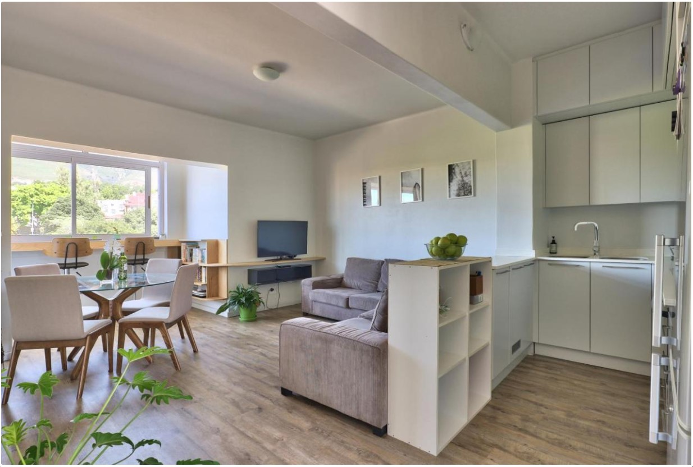
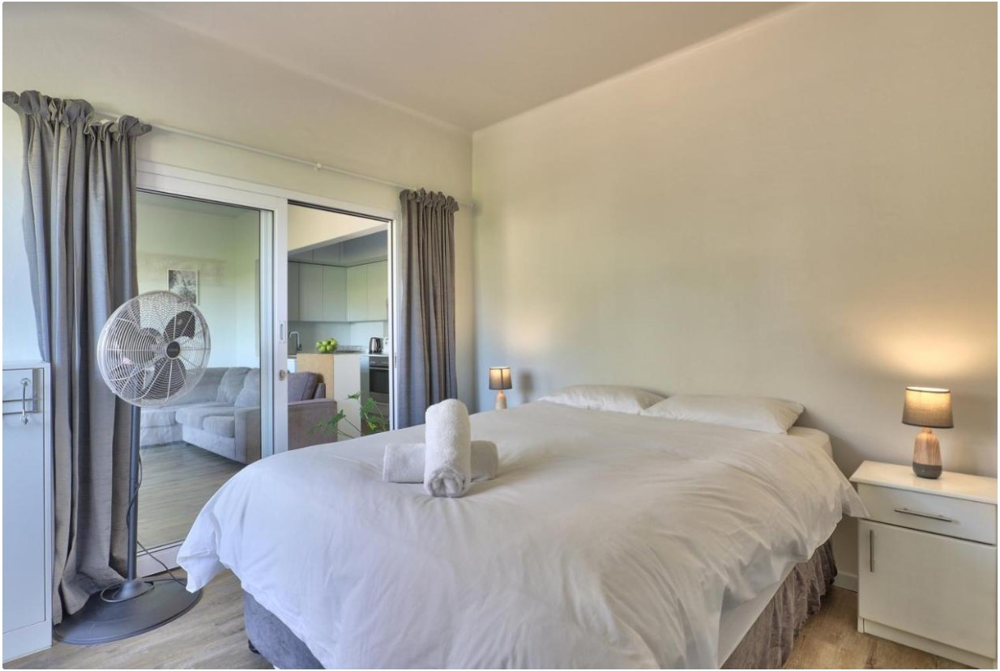
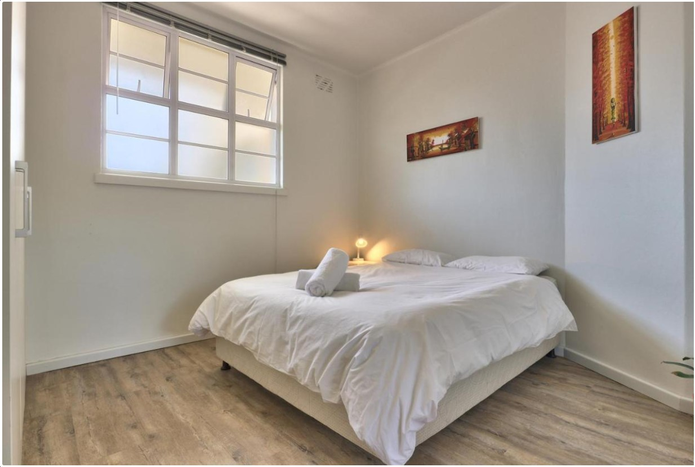
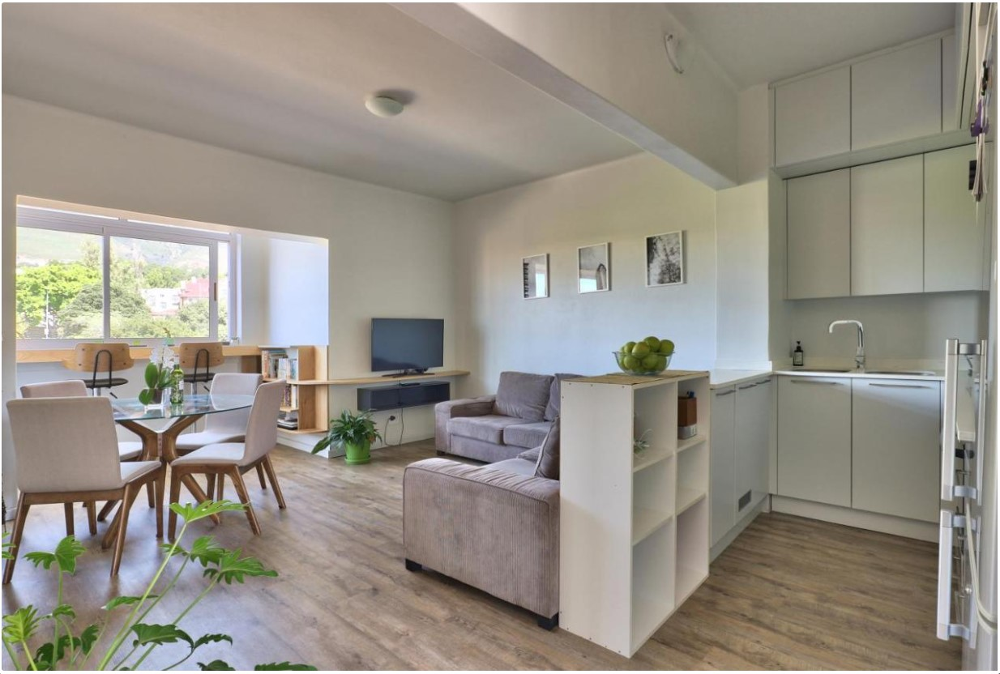
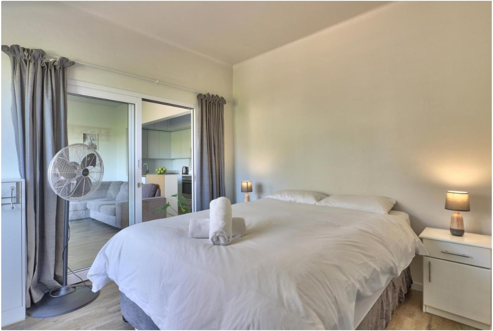
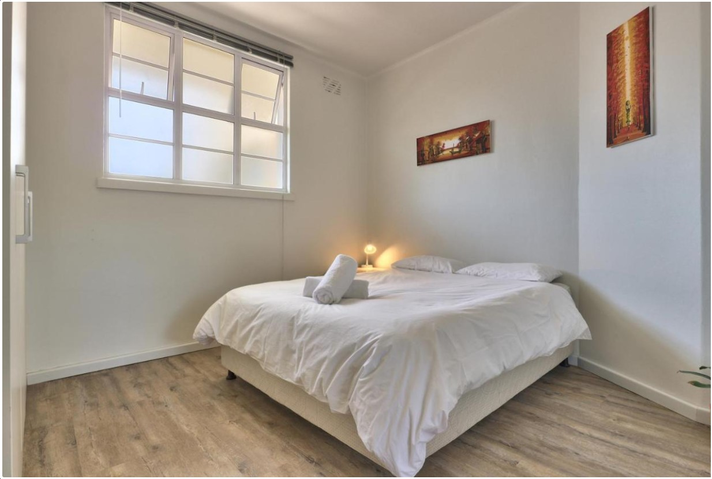
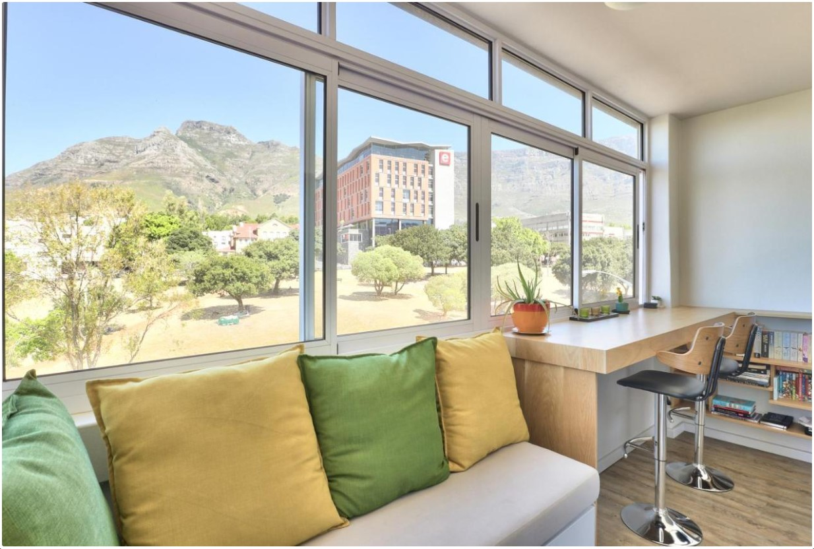
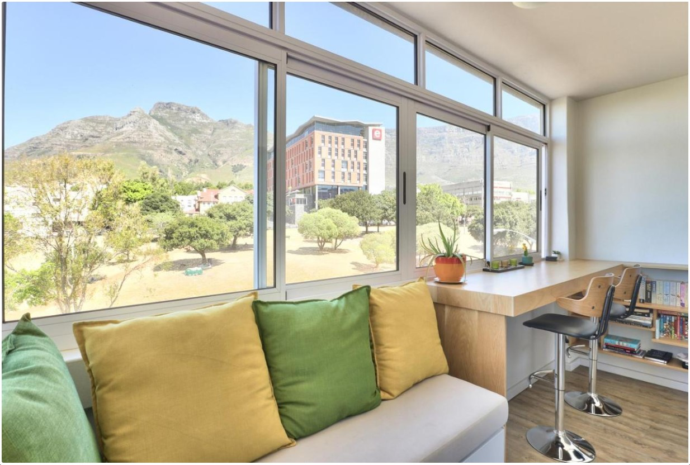

Sobre o Apartamento
Shannon 206 é um apartamento T2 moderno e centralmente localizado em Zonnebloem, Cape Town. Ideal para estadias de curta ou longa duração, oferece acesso fácil ao centro da cidade, segurança 24h, piscina no rooftop e estacionamento privado.
- 2 Quartos com camas confortáveis
- Cozinha totalmente equipada
- Wi-Fi de alta velocidade
- Estacionamento seguro
- Piscina no rooftop com vista panorâmica
Galeria
 





 

Calendário de Reservas
Seleciona a data de entrada e saída para verificar disponibilidade: